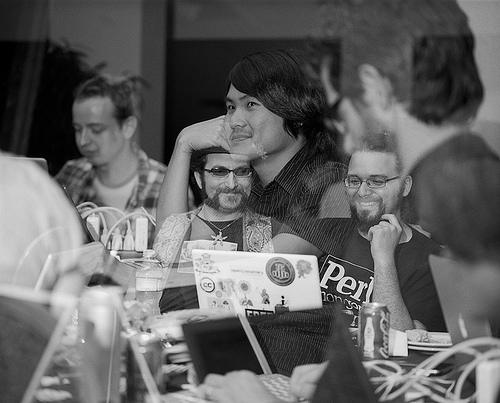
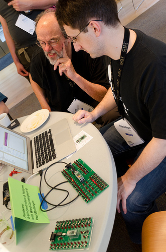
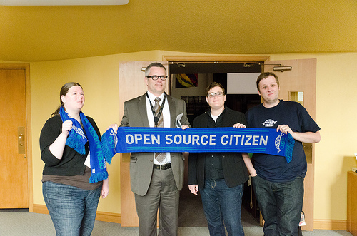
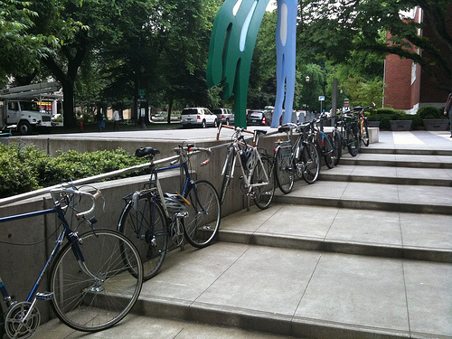
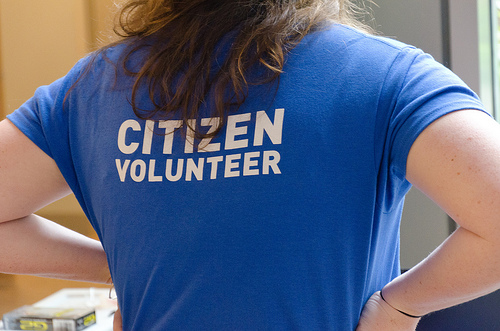
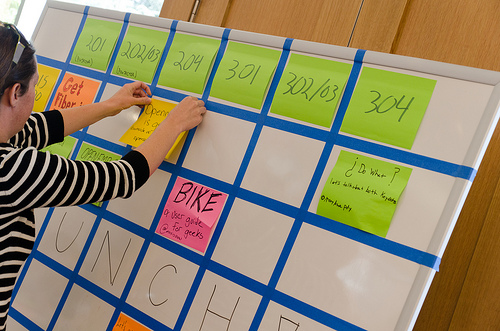
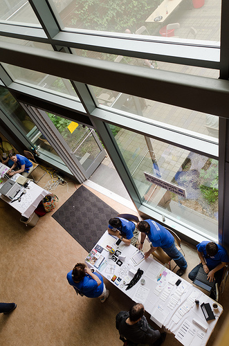
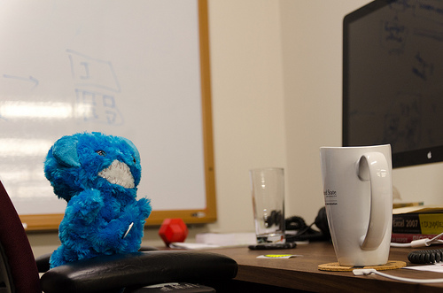

Event Planning for Geeks

John Labovitz
Who are we?
- Audrey Eschright
- Christie Koehler
- Sherri Montgomery
We organize…
- Conferences (Open Source Bridge)
- Unconferences (BarCamp Portland, WhereCampPDX)
- Open source code sprints
- Workshops
- Ignite
- Potlucks and socials
- and more!
We want to teach you…
How to get started planning your own event, in your own community, and resources for learning more.
What kind of event do you want to have?
- Conference
- Unconference
- Code Sprint
- Hackathon
- Workshop
|

Reid Beels
|
Assemble and organize your team

Reid Beels
Find a venue for your event

Ankur Naik
Raising money
Possible sources of income:
- Contributions from individuals
- put a contribute link on your website
- allow people to contribute during registration
- be transparent about your expenses
- Contributions from companies
- ask your community for contacts
- focus on supporting the community
- be creative about your offerings: logo placement, job listings, mentions in email newsletters, recognition during event, videos, etc.
- don’t let the sponsors boss you around
- Registration fees
- free events are great—cost is not a barrier to attending
- but some events really ought to have a registration fee
- Grants
Paying for things
Option 1: Have contributors pay vendors directly:
- Pros: Requires no setup. Sponsors know exactly what their money is going towards.
- Cons: can be logistically difficult. Hard to pool smaller contributions to pay for expensive things.
Paying for things
Option 2: Have contributors pay individuals on your planning team directly and then have those people pay for things.
- Pros: Requires no setup.
- Cons: Can be difficult to track and is easy to abuse.
Paying for things
Option 3: Use an existing organization for fiscal sponsorship.
- Pros: Possible increase in contributions from 501©(x) status, ability to leverage existing organizational experience, an entity to write checks to and from.
- Cons: A financial overhead of 15-20% is not unusual, possible lack of control, poor execution if the fiscal sponsor is inexperienced or unqualified.
Paying for things
Option 4: Start your own company or non-profit.
- Pros: Control, transparency of process. Setting up a company is easier.
- Cons: It’s a lot of work and responsibility. And it takes time.
Paying for things
Some other caveats:
Don’t represent yourself as being able to take tax-deductible donations if you are not eligible according to the IRS. Make sure you sign up for a regular business account with PayPal and Google Checkout, etc., and avoid using the words “donation” or “donate” on your website and other materials.
Recruit and manage your volunteers

Reid Beels
Set the event format and schedule

Reid Beels
Make sure the right people will show up
Register the attendees (ticket sales and more)

Reid Beels
Get insurance (when you need it), deal with liability, and respond when things go wrong

Reid Beels
Design and purchase event materials
Communicate with attendees
Set up on site: fun with venue logistics
Keep it safe, fun, and welcoming: codes of conduct, after parties, and considerations for serving alcohol
Unfortunately, the default in open source is not for events to be open, welcoming and safe for everyone.
If you want your event to be different from that status quo, you’ll need to actively work to make it different. Here are some tips for doing so:
- Adopt a code of conduct
- Be mindful when/how you provide alcohol
- Be available for feedback
- Be responsive to incidents
- Recognize positive behavior along with the negative
- Be radically inclusive: food, t-shirts and environment matter
Continue on
Keep the momentum once your first event is over
- Gather feedback from attendees
- Schedule a retrospective for your team
- Make plans for the next event
Questions?